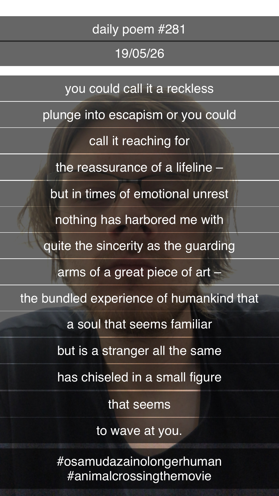

Great Art
You could call it a reckless
plunge into escapism, or you could
call it reaching for
the reassurance of a lifeline –
but in times of emotional unrest
nothing has harbored me with
quite the sincerity as the guarding
arms of a great piece of art –
the bundled experience of humankind that
a soul that seems familiar,
but is a stranger all the same,
has chiseled in a small figure
that seems
to wave at you.
